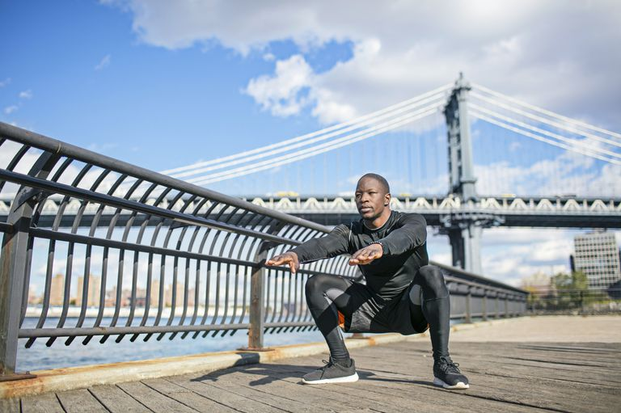

Leg workout
Training your legs is important, so many guys think that means you have to spend hours in the squat rack.
That's not always the case. Heavy loaded squats and deadlifts are an important part of a healthy strength training regimen — but they aren't the only way you can build up a strong, good looking set of gams.
Thankfully, your bodyweight and some serious willpower can get the job done, too, according to Robert Dos Remedios, C.S.C.S., strength and conditioning director for College of the Canyons in Santa Clarita, California.
Performing many of the exercises you would in the weight room sans iron will still give your legs the work they need, if you pump up the volume and focus on sets for time, instead of just reps.
Using a series of hard-hitting squats, lunges, and hip hinges, you can hammer all of the big muscles in your legs — hamstrings, glutes, and quads — until they burn. And since life rarely happens in just one plane of motion, these workouts will also have you moving in three directions so you can build real-world strength and mobility.
But those perks aren’t even the best part of adopting a bodyweight regimen: You can do these circuits anywhere—your living room, a hotel room, a park — as long as you have about six feet of floor space and an elevated surface (like a bed or box) handy. That makes these workouts the ultimate zero-excuse leg burners.